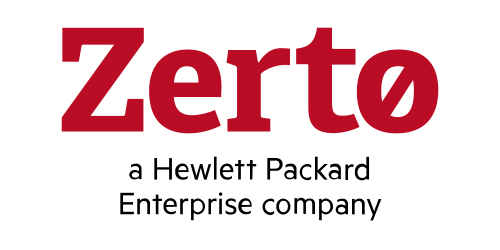
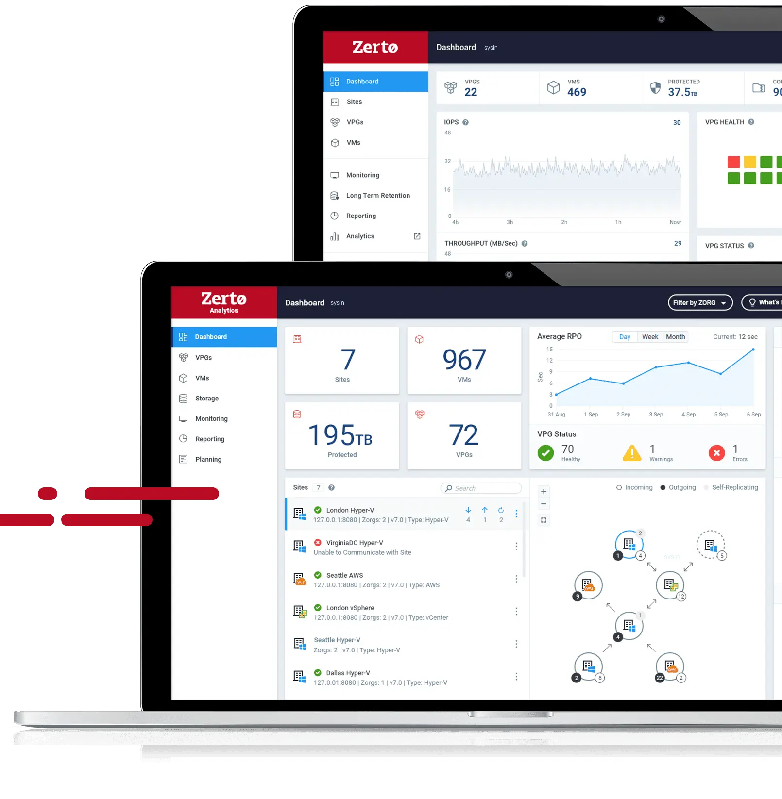

请访问原文链接：Zerto 10.9 - 适用于本地、混合和多云环境的灾难恢复和数据保护 查看最新版。原创作品，转载请保留出处。
作者主页：sysin.org

数据保护
HPE Zerto 软件
解锁勒索软件弹性、灾难恢复和持续数据保护，从根本上减少数据丢失和停机时间。

发挥行业领先的解决方案的优势，享受出色的勒索软件保护、灾难恢复和数据保护即服务，为各类应用、云和恢复型 SLA 保驾护航。
产品概述
Zerto 10 Launch Event
Real-Time Detection Meets Real-Time Protection
实时检测与实时保护相结合
简单、强大且无缝的保护
不论是网络攻击、自然灾害、人为错误，还是站点故障，HPE 旗下公司 Zerto 都能针对从边缘到云的虚拟化和容器化应用及数据，交付基于日志的持续数据保护和无以伦比的恢复 (sysin)。不仅如此，Zerto 提供统一且可扩展的自动化数据管理，能够轻松跨云移动工作负载和数据。
由于您能够快速恢复到攻击发生数秒之前的某个点，因此您不必再担忧受制于不断增加的勒索软件威胁。Zerto 提供快速应用和数据恢复并实现实时保护、秒级精细度和灵活性，可以只恢复继续操作所需的内容。
从边缘到云无缝部署及扩展灾难恢复保护即服务——这项技术为超过 350 个托管服务提供商提供 DRaaS 支持。借助行业中最低的恢复点目标 (RPO) 和最快的恢复时间目标 (RTO)，您可以让数据丢失和应用停机近乎为零。
颠覆您的数据保护体验
面对激增的数据和日益增加的勒索软件威胁，组织需要边缘到云的现代数据保护，以便轻松、快速地从中断恢复、实现全局一致性运维以及跨云无缝移动应用和数据 (sysin)，进而确保数据持续可用。
将数据丢失和停机时间降至最低
利用 Zerto 的持续数据保护和基于日志的恢复，确保应用极富弹性且能永续运行。利用每 5 秒钟设置一个的精细检查点复卷和恢复整个站点、完整的工作负载、大型企业应用、VM、文件夹和文件。
利用全域 DR 体验实现简化
在跨边缘、私有云和公有云环境中，针对其中任意存储设备上的所有虚拟化和容器化应用实现统一灾难恢复体验和一致编排，让您简化运维并将风险降至最低。
享受无缝的应用和数据移动
利用持续复制，以原生方式将应用和数据迁移到本地环境 (sysin)、Amazon Web Services (AWS) 和 Microsoft Azure，或迁移到公有云 VMware 部署，享受无与伦比的简便性和编排，且无需停机就可实现。
什么让 Zerto 脱颖而出？
Zerto 可以为组织提供单一且可扩展的云数据管理和保护平台，让组织得以加速 IT 转型。这款平台可自动执行及简化运维、整合工具并支持精细恢复，因此有助于节省时间和成本。100% 软件、Zerto 的持续数据保护技术以及基于日志的恢复在业界无出其右。
秒级 RPO
持续数据保护技术和基于日志的恢复
最快 RTO
（行业中）增强了恢复能力并大幅缩短了停机时间
完整编排
（跨云）简化故障转移、故障恢复和迁移
边缘到云的灵活性
支持任意位置的虚拟化和容器化应用
系统要求
ZVM Appliance System Requirements
- CPU: 6 vCPU with no reservation
- Memory: 16 GB RAM, 8 GB reserved
- Storage: 180 GB
- vSphere 7 or 8
- Database: If using an external database: MS SQL 2012 or later, installed on Windows Server 2016 or later
- Internet Connection: Currently the ZVM Appliance supports online mode deployment and online environments with an active connection to the Internet (sysin), as well as offline deployment and upgrade (starting with Zerto 10.0_U2_P1).
- For subsequent Zerto software updates starting with Zerto 10.0_U1, an additional 20GB of storage space must be added to the ZVMA /opt partition.
- vSphere Enhanced vMotion Compatibility (EVC) mode can be leveraged on Intel Westmere Generation or newer CPUs.
适用的 VMware 软件下载
建议在以下版本的 VMware 软件中运行（Linux OVF 无需本站定制版可以正常运行，macOS 虚拟化如果不是 Mac 必须使用定制版才能运行，Windows OVF 需要定制版才能启用完整功能）：
- VMware vSphere：
- VMware ESXi 9 or with driver & vCenter Server 9 & VCF Operations 9
- VMware ESXi 8 or with driver & vCenter Server 8
- VMware ESXi 7 or with driver & vCenter Server 7
- macOS：VMware Fusion
- Linux：VMware Workstation for Linux
- Windows：VMware Workstation for Windows
备注：运行在 VMware Fusion 或 VMware Workstation 中仅限于演示。
新增功能
Zerto 10.9 发行说明
- 最后更新：2026 年 5 月 19 日
Zerto（慧与企业公司 Hewlett Packard Enterprise 旗下公司）通过简化本地与云端应用的保护、恢复和迁移能力，帮助客户实现“始终在线”的业务运行。Zerto 在私有云、公有云及混合云部署中消除了现代化与云采用过程中的风险与复杂性。该简单的软件定义解决方案通过大规模持续数据保护（CDP），实现勒索软件防护、灾难恢复以及多云迁移能力。Zerto 在全球拥有超过 9,500 家客户，并为 Amazon、Google、IBM、Microsoft、Oracle 等企业及 350 多家托管服务提供商提供能力支持。
Zerto 软件/产品包含部分基于开源许可证发布的软件。Zerto 对开源软件不提供超出相应开源许可证范围的任何保证，并且不承担超出该许可证责任限制之外的任何责任。
新增功能
通用（General）
✅ Zerto AI 助手
Zerto 10.9 内置聊天代理，可通过检索增强生成（RAG）直接在 ZVM 中使用官方 Zerto 文档信息回答产品问题。该助手还可访问你的环境数据，并基于当前部署提供上下文感知回答，例如 VPG 状态或站点配置。
✅ Zerto 上下文协议（MCP）
Zerto 10.9 引入模型上下文协议（MCP）服务器，支持通过兼容 MCP 的 AI 客户端（如 Claude Desktop 和 VS Code Copilot）使用自然语言查询来管理和监控 ZVM 环境 (sysin)。MCP 服务器在本地运行，并使用 OAuth 2 和 TLS 1.2+ 安全连接。它提供对 ZVM 运维与监控的 AI 驱动访问，包括 VPG、VM、VRA、站点、告警、任务、故障切换测试以及 RPO 合规检查等。
✅ 恢复计划（Recovery Plans）
现在可以创建和管理恢复计划，以按预定义顺序编排多个 VPG 的故障切换操作。恢复计划允许将 VPG 分组为有序块，定义执行间隔，并通过单一操作执行协调的 Failover Test 或 Failover Live。
✅ Microsoft Defender for Endpoint（XDR）集成
Zerto 现已集成 Microsoft Defender for Endpoint（XDR），在检测到威胁时自动为受保护 VM 打标签检查点。该功能增强安全与恢复能力，在 vSphere、Azure 和 AWS 环境中可用（ARE 与 Cloud 授权）。
✅ 加密检测告警精度提升
优化加密检测算法，减少告警噪声，降低误报和不必要告警。
✅ 外部 Secrets Vault 集成
Zerto 支持集成 HashiCorp Vault 作为外部密钥管理系统，提供更安全灵活的敏感凭据管理方式。可将 vCenter 凭据等 Zerto 密钥存储在外部 HashiCorp Vault 中，而非仅保存在 Zerto 数据库 (sysin)。通过 settings service 集中管理密钥访问，在不改变 Zerto 配置的情况下提升安全性与合规性。
VMware
✅ 网络安全恢复 VPG（Cyber Recovery VPG）
Zerto 10.9 引入全新 VPG 类型，专为网络安全恢复设计，用于应对勒索软件及高级网络威胁。该能力超越传统灾难恢复，支持从网络攻击事件中恢复，并提供基于自动事件驱动检查点的恢复流程，包括基于存储快照的离线恢复、安全集成以及网络恢复计划。该功能适用于 MSP 或部署 Advanced Resilience Edition（ARE）授权的企业客户。
✅ 日志收集增强
日志收集流程增强如下：
- 自动清理历史/失败日志收集残留临时目录
- 每个站点仅保留一个日志包（本地/对端），减少冗余
- 支持在无数据库连接情况下紧急收集日志
- 确保 VRA 日志严格匹配所选时间范围
✅ 支持从 VCF 5.2 平滑升级至 VCF 9.0
Zerto 10.9 起支持从 VCF 5.2 无缝升级到 VCF 9.0。
✅ 多许可证包支持
现在支持在一个 ZVM 集群中管理多个许可证包。可组合不同许可（ARE、ECE 和 Migration），以更好匹配业务需求，优化许可证使用率并精细化保护策略 (sysin)。可通过 ZVM UI 或 /v1/licenses API 管理多许可环境。
✅ VAIO 环境非 SSH VRA 操作支持
支持在 VAIO 环境中对 VRA 执行安装、升级、卸载、监控和日志收集操作，无需 SSH 或 ESXi 主机凭据，提高安全性并简化运维。
✅ 恢复时保持 vGPU 一致性
在 vSphere 环境中，若保护端与恢复端具备相同 GPU 硬件，则支持使用虚拟 GPU 的 VM 在灾难恢复站点保持 GPU 配置一致性。支持 AI/ML 和 VDI 等工作负载。
✅ ZVM Appliance 数据库重配置支持
支持将 ZVM Appliance 数据库从外部 SQL 迁移至内置 SQL。
Public Cloud
✅ 更新 ZCA 与 Scale Set 默认 VM 规格
更新 Zerto Cloud Appliance（ZCA）与 Scale Set VM 默认规格，以匹配 Azure 最新实例类型：
- 新 ZCA 默认规格：Standard_D4s_v5（替代 Standard_DS3_v2）
- 新 Scale Set 默认规格：Standard_D2as_v5（替代 Standard_DS1_v2）
该变更确保 Azure DR 持续获得最佳性能与支持。现有部署不会自动更改，但建议规划迁移至新规格。
✅ 扩展 AWS Guest OS 支持
新增 AWS 故障切换支持的操作系统版本：Debian 12、Ubuntu 24.02、RHEL 9.x。系统可自动识别 OS 并在恢复时应用必要配置。
✅ 改进 AWS 与 Azure 受保护工作负载处理
优化删除保护对象后的行为一致性：
- 统一 On-Prem、AWS、Azure 行为
- 提升云端删除 VM/Volume 的检测准确性
- 避免误导性“可恢复”状态
- 改进 journal 管理与反馈机制
✅ AWS / Azure VRA 性能与可靠性优化
优化 VRA 在 Azure 与 AWS 的行为：减少限流、加快 volume/snapshot 操作、提升启动可靠性。包括：
- Azure 异步操作退避策略优化
- 快照元数据缓存
- HTTP 重试与超时优化
- Azure SAS token 日志脱敏
提升大规模环境稳定性。
✅ Azure ZCA 支持 GPv2 存储账户
Azure ZCA 支持 GPv2 存储账户并使用优化数据路径，以降低成本并适应 Azure GPv2-only 定价策略。
注：10.9 仅为第一阶段优化，完整成本优化将在 10.9.1 提供。
HVM
✅ VMware vCenter 到 HVM 跨复制支持
支持 VMware vCenter 与 HPE Morpheus VM Essentials（HVM）之间双向跨平台复制。可在 VMware 与 HVM 站点之间创建 VPG，实现虚拟机持续复制与保护，并支持 Failover Test（FOT）与 Failover Live（FOL）。同时支持 VMware → HVM 的单向迁移（Move）。
✅ HVM 反向保护预置支持
在 Failover 后执行 Reverse Protect 时，可选择预置卷以显著减少初始同步时间。
AVS
✅ AVS Gen 2（AV64）支持
支持 Azure VMware Solution（AVS）Gen 2（AV64）环境。
Zerto Analytics
✅ Zerto Analytics MCP
Zerto 10.9 引入 Analytics MCP 服务器，支持通过自然语言查询 Zerto Analytics 数据。
可通过 Claude Desktop、VS Code Copilot 等客户端访问本地 MCP 服务，提供只读访问能力，涵盖 VPG、VM、站点、告警、事件、任务、存储、许可、RPO 合规、SLA、网络性能等分析 (sysin)。
✅ Analytics 许可证视图更新
支持多许可证与多包模型：
- 统一展示 legacy 与 multi-license 数据
- 新增 /v3/licenses API
- 保留 /v2/licenses 向后兼容
API
✅ VPG 类型过滤 API
在 /get/vms API 中新增 VPG 类型过滤能力。
✅ 多许可证管理 API
新增 /v1/licenses API：
- GET：获取许可证
- POST：添加许可证
- DELETE：删除全部许可证
旧 /v1/license 将在两个版本后弃用。
✅ 外部 Secrets Vault API 支持
在 /management/configuration/v1/settings 中新增 secretsStore 参数，支持 HashiCorp Vault 集成。
✅ ZVM 网络配置 API
新增 /management/api/configuration/network API：支持获取、配置（静态/DHCP）并应用网络设置（仅适用于未完成初始化的 appliance）。
✅ Proxy 与重启 API
新增 ZVM appliance HTTP/HTTPS proxy 配置 API，并支持通过 API 触发重启。
✅ 已解决问题：修复了多项已知问题，篇幅较长，sysin 未翻译，请参看官方文档。
下载地址
Zerto Virtual Manager (ZVM) 已经抛弃了旧版的 Windows 解决方案，现在是 Linux，基于 Debian 11/12 (latest version)。
解决方案组件：
- Zerto Virtual Manager (ZVM) Appliance for vSphere 10.0
- 百度网盘链接：见下方
- Zerto Cloud Manager (ZCM) for Windows
- Zerto Cloud Appliance (ZCA) Windows installer for AWS
- Zerto Cloud Appliance (ZCA) Windows installer for Azure
- Zerto Cloud Appliance (ZCA) for Linux (Cloud based)
- Zerto VSS Agent for Windows x86 & x64
- Zerto Migration Utility for Windows: supports switching from a Windows-based Zerto Virtual Manager (ZVM) to a Linux-based appliance (ZVM Appliance).
Zerto 10 Update 1 | Sep 21, 2023
Zerto 10 Update 2 | Nov 29, 2023
Zerto 10 Update 3 | Oct 15, 2024
Zerto 10 Update 4 | Oct 14, 2024
Zerto 10 Update 5 | Dec 16, 2024
Zerto 10 Update 6 | Jan 28, 2025
- Zerto Virtual Manager (ZVM) Appliance for vSphere 10.0 U6
- 文件名：zvml-build-z10_u6-10.0.60.3415.ova
- 文件小大：9.6GB
- 百度网盘链接：
[EoD]
Zerto 10 Update 7 | May 29, 2025
- Zerto Virtual Manager (ZVM) Appliance for vSphere 10.0 U7
- 文件名：zvml-build-z10_u7-10.0.70.2129.ova
- 文件小大：10.3GB
- 百度网盘链接：
[EoD]
Zerto 10.8 | Oct 30, 2025
- Zerto Virtual Manager (ZVM) Appliance for vSphere 10.8
- 文件名：zvml-build-10.8.0-10.8.0.1346.ova
- 文件小大：7.3GB
- 百度网盘链接：
[EoD]
Zerto 10.9 | May 19, 2026
- Zerto Virtual Manager (ZVM) Appliance for vSphere 10.9
- 文件名：zvml-build-10.9.0-10.9.0.2691.ova
- 文件小大：6.7GB
- 百度网盘链接：https://pan.baidu.com/s/17W7kvmp1qfk57_69pVushg?pwd=wiwj
更多：Linux 产品链接汇总

文章用于推荐和分享优秀的软件产品及其相关技术，所有软件默认提供官方原版（免费版或试用版），免费分享。对于部分产品笔者加入了自己的理解和分析，方便学习和研究使用。任何内容若侵犯了您的版权，请联系作者删除。如果您喜欢这篇文章或者觉得它对您有所帮助，或者发现有不当之处，欢迎您发表评论，也欢迎您分享这个网站，或者赞赏一下作者，谢谢！
 支付宝赞赏
支付宝赞赏  微信赞赏
微信赞赏赞赏一下
敬请注册！点击 “登录” - “用户注册”（已知不支持 21.cn/189.cn 邮箱）。 请勿使用联合登录（已关闭）。